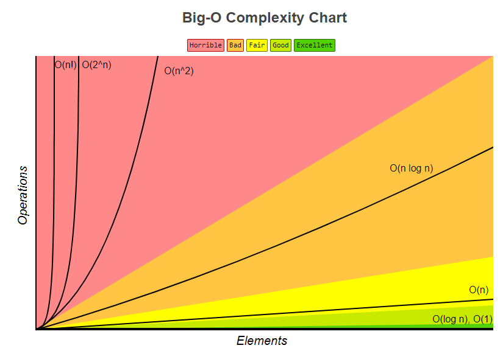

Potenzgesetze
Überblick
Potenzen addieren
\[ ax^n + bx^n = (a + b) x^n \]
Potenzen subtrahieren
\[ ax^n - bx^n = (a - b) x^n \]
Potenzen multiplizieren
Mit gleicher Basis:
\[ x^a - x^b = x^{a + b} \]
Mit gleichem Exponenten:
\[ a^n - b^n = (a * b)^{n} \]
Potenzen dividieren
Mit gleicher Basis:
\[ x^a : x^b = \frac{x^a}{x^b} = x^{a - b} \]
Mit gleichem Exponenten:
\[ a^n : b^n = = \frac{a^n}{b^n} = (\frac{a}{b})^{n} \]
Potenzen potenzieren
\[ (x^a)^b = x^{a * b} \]
Gleiche Basis
Multiplikation mit gleicher Basis
\[ x^{a} * x^{b} = x^{a + b} \]
Division mit gleicher Basis
\[ x^{a} : x^{b} = \frac{x^{a}}{x^{b}} = x^{a - b} \]
Potenzen potenzieren
\[ (x^{a})^{b} = x^{a * b} \]
Unterschiedliche Basis
Multiplikation mit unterschiedlicher Basis
\[ a^{n} * b^{n} = (a * b)^n \]
Division mit unterschiedlicher Basis
\[ a^{n} : b^{n} = \frac{a^{n}}{b^{n}} = (\frac{a}{b})^n \]
Besonderheiten
Negative Basis
Negative Zahl mit geradem exponentem:
\[ (-b)^{2n} = ((-b)^2)^n = (b^2)^n = b^{2n} \]
Exponent = 0
\[ x^0 = 1 \]
Negative Exponenten
\[ x^{-n} = \frac{1}{x^n} \]
Brüche als Exponenten
\[ x^{\frac{1}{n}} = \sqrt[n]{x} \]
\[ x^{\frac{m}{n}} = x^{m * \frac{1}{n}} = (x^m)^{\frac{1}{n}} = \sqrt[n]{x^m} \]
\[ x^{-\frac{m}{n}} = \frac{1}{\sqrt[n]{x^{m}}} \]
Pseudo Code
Syntax
| Symbol | Bedeutung | Beispiele |
|---|---|---|
{ident} | Ein Bezeichner für eine Variable | |
{value} | Ein Wert | "hallo", 2 |
{type} | Datentyp der Variable | Digit, ℕ |
| Symbol | Name | Erklärung | Beispiel |
|---|---|---|---|
{ident} := {value} | Zuweisung | c := 0 | |
{ident} = {value} : {type} | Variablendeklaration | d = 1 : Digit oder answer = 42 : ℕ | |
// | Kommentar | // dies ist ein Kommentar | |
({ident}, {ident}) | Tupel | (a, b) | |
({ident}, {ident}) | Tupel | (a, b) | |
⊥ | Undefinierter Wert | c := ⊥ | |
{statement} ; {statement} | Mehrere Ausdrücke in einer Zeile | c = 0 ; d = 1 |
Elementare Datentypen
| Datentyp | Bedeutung | Wertebereich |
|---|---|---|
integer | ganze Zahlen | |
Boolean | Boolsche Werte (True oder true?) | |
Element | Wenn der Datentyp irrelevant ist |
Die numerischen Typen werden manchmal um die Werte \( - \infty \) und \( \infty \) erweitert.
Besondere Werte
Undefinierter Wert (⊥)
Manchmal werden Typen um einen undefinierten Wert (bezeichnet mit dem Symbol ⊥) erweitert, der von den „eigentlichen“ Objekten vom Typ T unterscheidbar sein soll.
Beispiele
p = ⊥ : Digit
Zeigertypen (Pointer to T)
Besonders bei Zeigertypen ist ein undefinierter Wert hilfreich.
Werte des Zeigertyps (Pointer to T) sind "Griffe" (engl.: handle) für Objekte vom Typ T.
Im RAM-Modell ist ein solcher Griff einfach der Index (die "Adresse") der ersten Zelle eines Speichersegments, in dem Objekt vom Typ T gespeichert ist.
Beispiele
p = ⊥ : Pointer to T
Arrays
Deklaration a : Array [i..j] of T stellt einen Array a bereit, der aus j - i + 1 Einträgen vom Typ T besteht,
die in a[i], a[i+1], ..., a[j] gespeichert sind.
Arrays werden als zusammenhängende Speichersegmente realisiert. (= Es gibt keine Lücken im Array)
Um den in a[k] abgelegten Eintrag zu finden, genügt es,
die Startadresse von a und die Größe eines Objektes vom Typ T zu kennen.
Wenn beispielsweise Register R_a die Startadresse des Arrays a[0..k] enthält und R_i den Index 42,
und wenn jeder Eintrag ein Speicherwort ist,
dann lädt die Befehlsfolge R_1 :=R_a + R_i; R_2 := S[R_1] den Inhalt von a[42] in Register
R_2.
R_a = /* enthält die Startadresse von a[0..k] */
R_i = 42 : Index
R_i := R_a + R_i
R_2 := S[R_1]
Die Größe eines Arrays wird festgelegt, wenn die Deklaration ausgeführt wird; solche Arrays heißen statisch.
Klassen
Eine Deklaration c : Class age : N, income : N end stellt eine Variable c bereit, deren Werte Paare von ganzen Zahlen sind.
Zugriff auf die Felder einer Klasse
Die Komponenten von c werden mit c.age und c.income angesprochen.
Für eine Variable cliefert addressof c einen Griff für c (d. h. die Adresse von c).
Wenn p eine Variable vom passenden Zeigertyp ist, dann können wir mit p := addressof c diesen Griff in p speichern;
mit ∗p erhalten wir das Objekt c zurück.
Die beiden "Felder" von c können dann auch durch p→age und p→income angesprochen werden.
Die alternative Schreibweise (∗p).age und (∗p).income ist möglich, aber ungebräuchlich.
allocate, dispose
Arrays und Objekte, auf die mit Zeigern verwiesen wird, können mit den Anweisungen
allocate und dispose bereitgestellt und mit einem Namen versehen
bzw. wieder freigegeben werden. Beispielsweise stellt die Anweisung p := allocate
Array [1..n] of T ein Array von n Objekten vom Typ T bereit, d. h., es wird ein zusammenhängendes
Speichersegment reserviert, dessen Länge für genau n Objekte
vom Typ T ausreicht, und die Variable p erhält als Wert den Griff für das Array (die
Startadresse dieses Speichersegments). Die Anweisung dispose p gibt den Speicherbereich
frei und macht ihn damit für anderweitige Benutzung verfügbar. Mit den
Operationen allocate und dispose können wir das Array S der RAM-Speicherzellen
in disjunkte Stücke zerlegen, auf die man individuell zugreifen kann. Die beiden
Funktionen können so implementiert werden, dass sie nur konstante Zeit benötigen,
zum Beispiel auf die folgende extrem einfache Weise: Die Adresse der ersten freien
Speicherzelle in S wird in einer speziellen Variablen free gehalten. Ein Aufruf von
allocate reserviert einen Speicherabschnitt, der bei free beginnt, und erhöht free um
dem Umfang des reservierten Abschnitts. Ein Aufruf von dispose hat keinen Effekt.
Diese Implementierung ist zeiteffizient, aber nicht speicherplatzeffizient: Zwar benötigt
jeder Aufruf von allocate oder dispose nur konstante Zeit, aber der gesamte Speicherplatzverbrauch
ist die Summe der Längen aller jemals reservierten Segmente und
nicht der maximale zu einem Zeitpunkt benötigte (d. h. reservierte, aber noch nicht
freigegebene) Platz. Ob jede beliebige Folge von allocate- und dispose-Operationen
zugleich speicherplatzeffizient und mit konstantem Zeitaufwand für jede Operation
realisiert werden kann, ist ein offenes Problem. Jedoch lassen sich für alle Algorithmen,
die in diesem Buch vorgestellt werden, allocate und dispose zugleich zeit- und
platzeffizient realisieren.
Übernommene Datentypen aus der Mathematik
Tupel ((1, 2, 3))
Einige zusammengesetzte Datentypen werden wir aus der Mathematik übernehmen.
Insbesondere verwenden wir Tupel, (endliche) Folgen und Mengen. (Geordnete)
Paare, Tripel und andere Tupel werden in Klammern geschrieben, wie in (3,1), (3,1,4) und (3,1,4,1,5).
Weil sie nur eine im Typ festgelegte Anzahl von Komponenten
enthalten, können Operationen auf Tupeln auf offensichtliche Weise in
Operationen auf diesen Komponenten zerlegt werden. Eine Folge, geschrieben mit
spitzen Klammern, speichert Objekte eines Typs in einer spezifizierten Reihenfolge;
dabei legt der Typ die Anzahl der Einträge nicht fest.
Folgen (\(\left \langle 3, 1, 4, 1 \right \rangle\))
Beispielsweise deklariert die Anweisung „\(s = \left \langle 3, 1, 4, 1 \right \rangle\) : Sequence of \(\mathbb{Z}\)“
eine Folge s von ganzen Zahlen und initialisiert sie mit der Folge
\(\left \langle 3, 1, 4, 1 \right \rangle\) der Zahlen 3, 1, 4 und 1, in dieser Reihenfolge.
Die leere Folge wird als \(\left \langle \right \rangle\) geschrieben. Folgen sind eine natürliche Abstraktion
vieler Datenstrukturen wie Dateien (Files), Strings (Zeichenreihen), Listen, Stapel
(Stacks) und Warteschlangen (Queues).
Mengen
Mengen spielen eine wichtige Rolle in mathematischen Überlegungen; wir werden sie auch in unserem Pseudocode benutzen. Es werden also Deklarationen wie „M = {3,1,4} : Set of ℕ“ vorkommen, die analog zu Deklarationen von Arrays oder Folgen zu verstehen sind. Die Implementierung des Datentyps „Menge“ erfolgt meist über Folgen.
Anweisungen
TODO: Im Buch 2.3.2 Anweisungen
O-Notation

https://www.bigocheatsheet.com
Definition
| Notation | Definition | Mathematische Definition |
|---|---|---|
| \(f \in \mathcal{O}(g)\) | asymptotische obere Schranke | \[ \limsup_{x \to a} \left|\frac{f(x)}{g(x)}\right| < \infty \] |
| \(f \in \Omega(g)\) | asymptotische untere Schranke \(g \in \mathcal{O}(g)\) | \[ \liminf_{x \to a} \left|\frac{f(x)}{g(x)}\right| >0 \] |
| \(f \in \Theta(g)\) | asymptotisch schrafe Schranke, sowohl \(f\in\mathcal{O}(g)\) als auch \(f\in\Omega(g)\) | \[ 0 < \liminf_{x \to a} \left|\frac{f(x)}{g(x)}\right| \le \limsup_{x \to a} \left|\frac{f(x)}{g(x)}\right|< \infty \] |
| \(f \in \hbox{o}(g)\) | asymptotisch gegenüber \(g\) vernachlässigbar | \[ \lim_{x \to a} \left|\frac{f(x)}{g(x)}\right | = 0 \] |
| \(f \in \omega(g)\) | asymptotisch dominant, \(g\in\hbox{o}(f)\) | \[ \lim_{x \to a} \left|\frac{f(x)}{g(x)}\right| = \infty \] |
Mengen Definition
| Notation | Menge |
|---|---|
| \[ O(f(n)) \] | \[ \{ g(n) : \exists c > 0 : \exists n_0 \in \mathbb{N}_+ : \forall n \geq n_0 : g(n) \leq c * f(n) \} \] |
| \[ \Omega(f(n)) \] | \[ \{ g(n) : \exists c > 0 : \exists n_0 \in \mathbb{N}_+ : \forall n \geq n_0 : g(n) \geq c * f(n) \} \] |
| \[ \Theta(f(n)) \] | \[ \mathcal{O}(f(n)) \cap \Omega(f(n)) \] |
| \[ \hbox{o}(f(n)) \] | \[ \{ g(n) : \forall c > 0 : \exists n_0 \in \mathbb{N}_+ : \forall n \geq n_0 : g(n) \leq c * f(n) \} \] |
| \[ \omega(f(n)) \] | \[ \{ g(n) : \forall c > 0 : \exists n_0 \in \mathbb{N}_+ : \forall n \geq n_0 : g(n) \geq c * f(n) \} \] |
Gebräuchliche Klassen
| O-Klasse | Eigenschaft |
|---|---|
| \( O(1) \) | Höchstens konstanter Aufwand |
| \( O(\log n) \) | Höchstens logarithmischer Aufwand |
| \( O(n) \) | Höchstens linearer Aufwand |
| \( O(n \log n) \) | Höchstens \( n \log n \) |
| \( O(n^2) \) | Höchstens quadratischer Aufwand |
| \( O(n^k) \) | Höchstens polynomialer Aufwand |
| \( O(2^n) \) | Höchstens exponentieller Aufwand |
Hierarchie im O-Kalkül
Für \(a \in \mathbb{N}_+\) mit \( a > 1\) gilt:
\[ 1 \leq \log{n} \leq \sqrt[a]{n} = n^{\frac{1}{a}} \leq n \leq n^a \leq a^n \leq n! \leq n^n \]
Rechenregeln
Sei \(p(n) = \sum_{i=0}^{k} a_i n^i\) ein Polynom mit reelen Koeffizienten, wobei \(a_k > 0\) gilt.
Dann ist \( p(n) \in O(n^k) \)
Falls \( g(n) \in O(f(n)) \) gilt:
\[ f(n) + g(n) \in O(f(n)) \]
\[ \forall c > 0 : c f(n) \in \Theta(f(n)) \]
\[ f(n) + g(n) \in \Omega(f(n)) \]
\[ O(f(n)) * O(g(n)) = O(f(n) * g(n)) \]
Chapter 1
Definition von Algorithmus
Rechenvorschrift zur Lösung eines Problems, bestehend aus endlich vielen, wohldefinierten Einzelschritten
Eigenschaften eines Algorithmus
- ein Algorithmus besitzt eine Eingabe und eine Ausgabe
- das Verfahren muss eindeutig und endlich beschreibbar sein (Finitheit)
- jeder Schritt des Verfahrens muss tatsächlich ausführbar sein (Ausführbarkeit)
- das Verfahren darf zu jedem Zeitpunkt nur endlich viel Speicherplatz benötigen (dynamische Finitheit, Platzkomplexität)
- das Verfahren darf nur endlich viele Schritte benötigen (Terminierung, Zeitkomplexität)
Erster Algorithmus: Langzahl-Multiplikation
Gegeben:
- Zahlen als Ziffernfolgen ("digits") zur Basis B
- \( \vec{a} = (a_{n-1}, ... , a_{0}) \) mit Ziffern \( a_i = \{ 0, ..., B - 1 \} \)
- beschreibt die Zahl \( a_{0} * B^{0} + a_{1} * B^{1} + a_{2} * B^{2} + ... + a_{n-1} * B^{n-1} \)
Aufgabe:
Berechne das Produkt zweier Langzahlen \( \vec{a} \) und \( \vec{b} \).
Algorithmus zur Addition zweier Langzahlen
Eingabe: zwei Langzahlen \( \vec{a} = (a_{n-1}, ... , a_{0}) \) und \( \vec{b} = (b_{n-1}, ... , b_{0}) \)
Verfahren:
c = 0 : Digit // carry, Überlauf
for i := 0 to n - 1 do
(c, s_i) := a_i + b_i + c
s_n := c
Ausgabe: Summe \( \vec{s} = (s_{n}, ... , s_{0}) \)
Satz: Addition von zwei \(n\)-Ziffern-Zahlen benötigt \(n\) (Ziffern-)Additionen
Algorithmus zur Multiplikation mit einer Ziffer
Function numberTimesDigit(a: Array[0..n-1] of Digit, b: Digit)
r: Array[0..n] of Digit
c = 0 : Digit
(hi', lo) := a[0] * b // Ziffernmultiplikation
r[0] := lo
for i := 1 to n - 1 do
(hi, lo) := a[i] * b // Ziffernmultiplikation
(c, r[i]) := c + hi' + lo // Ziffernaddition
hi' := hi
r[n] := c + hi'
return r
Anzahl an Multiplikationen: \( (n - 1) + 1 = n \)
Anzahl an Additionen: \( (n - 1) + 1 = n \)